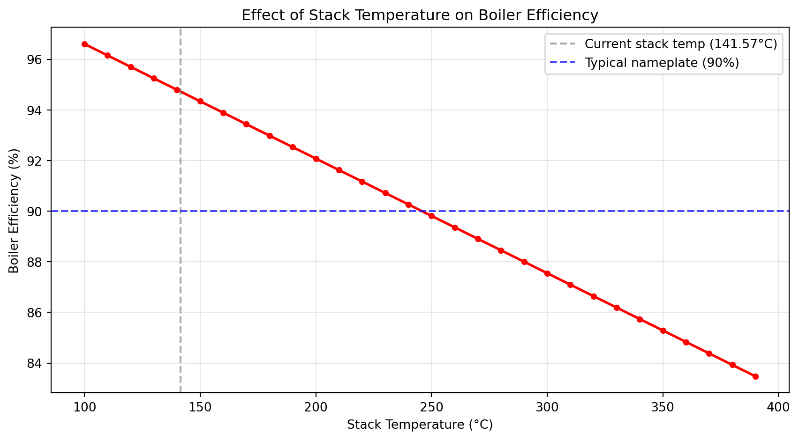

from iapws import IAPWS97
import numpy as np
import matplotlib.pyplot as pltLab 1: Boiler Efficiency Calculation
Objectives
By the end of this lab you will be able to:
- Apply the direct method to calculate boiler efficiency from plant data
- Calculate LHV from HFO elemental composition using the Dulong formula
- Apply the indirect method using flue gas stack loss
- Interpret the difference between direct and indirect efficiency results
Background
Boiler efficiency measures how effectively the boiler converts fuel energy into useful steam energy. Two methods are used in practice:
Direct method (input/output):
\[\eta = \frac{Q_{steam}}{Q_{fuel}} = \frac{\dot{m}_{steam} \times (h_{steam} - h_{fw})}{\dot{m}_{fuel} \times LHV}\]
Indirect method (loss method):
\[\eta = 1 - \frac{Q_{losses}}{Q_{fuel}}\]
The indirect method accounts for individual losses — the dominant one being stack (flue gas) heat loss. A complete indirect analysis also includes radiation, convection, and unburnt carbon losses.
Measurement Boundary
Feedwater (T02447, 254°C) → [BOILER SYSTEM] → HP Steam (T02602, 536°C)
↑
Fuel (G01038, 52.42 ton/h)The economizer is inside the boiler boundary — its heat recovery is credited to the boiler in both methods.
Setup
Part 1: HFO Heating Value
Heavy fuel oil heating value depends on its elemental composition. The Dulong formula relates LHV to HHV:
\[LHV = HHV - 2442 \times (9H + W)\]
Where \(H\) is hydrogen mass fraction and \(W\) is moisture mass fraction. The factor \(9H\) accounts for water formed by hydrogen combustion; \(2442\) kJ/kg is the latent heat of water vapour at 25°C.
# HFO elemental composition (mass fractions) — X008xx tags
C = 84.0 / 100 # X00800 carbon
H = 13.4 / 100 # X00801 hydrogen
S = 0.6 / 100 # X00802 sulfur
O = 1.5 / 100 # X00803 oxygen
N = 0.5 / 100 # X00804 nitrogen
W = 1.0 / 100 # X00807 moisture
HHV = 41303.16 # kJ/kg H00810
LHV = HHV - 2442 * (9 * H + W)
print(f"HHV : {HHV:.2f} kJ/kg")
print(f"LHV (Dulong) : {LHV:.2f} kJ/kg")
print(f"HHV - LHV : {HHV - LHV:.2f} kJ/kg")HHV : 41303.16 kJ/kg
LHV (Dulong) : 38333.69 kJ/kg
HHV - LHV : 2969.47 kJ/kgQ1. Why is LHV lower than HHV? Which basis is used for boiler efficiency in marine and power engineering practice, and why?
# Your answer herePart 2: Direct Method
Using measured steam and feedwater enthalpies with actual fuel flow.
# Steam side measurements
h_steam = 3400.8 # kJ/kg H02603 HP line steam enthalpy
h_fw = 1097.1 # kJ/kg H02448 economizer water inlet enthalpy
G_steam = 716.17 / 3.6 # kg/s G02600 (ton/h → kg/s)
# Fuel side
G_fuel = 52.42 / 3.6 # kg/s G01038 HFO supply flow (ton/h → kg/s)
# Heat flows
Q_steam = G_steam * (h_steam - h_fw)
Q_fuel = G_fuel * LHV
eta_direct = Q_steam / Q_fuel
print(f"Enthalpy rise : {h_steam - h_fw:.2f} kJ/kg")
print(f"Heat to steam : {Q_steam:.1f} kW")
print(f"Fuel heat input : {Q_fuel:.1f} kW")
print(f"Boiler efficiency (direct): {eta_direct:.1%}")Enthalpy rise : 2303.70 kJ/kg
Heat to steam : 458289.1 kW
Fuel heat input : 558181.1 kW
Boiler efficiency (direct): 82.1%Q2. The boiler nameplate efficiency is 90%. What does the difference between your result and nameplate suggest about current operating conditions?
# Your answer herePart 3: Indirect Method — Stack Loss
The largest single boiler loss is heat carried away by flue gas. We calculate flue gas flow from fuel composition and excess air, then quantify the stack loss.
Step 1: Excess Air from O₂ Measurement
\[\lambda = \frac{21}{21 - O_{2}\%}\]
O2_fg = 0.75 # vol% X02419 O2 in flue gas (dry)
T_stack = 141.57 # °C T02114 rotary air preheater gas outlet
T_ref = 25.0 # °C reference
lambda_excess = 21 / (21 - O2_fg)
excess_air_pct = (lambda_excess - 1) * 100
print(f"O2 in flue gas : {O2_fg:.2f} vol%")
print(f"Excess air factor (λ) : {lambda_excess:.4f}")
print(f"Excess air : {excess_air_pct:.1f}%")O2 in flue gas : 0.75 vol%
Excess air factor (λ) : 1.0370
Excess air : 3.7%Step 2: Flue Gas Flow
# Stoichiometric air requirement (Dulong)
air_stoich = (2.667 * C + 8 * (H - O / 8) + S) / 0.232
air_actual = air_stoich * lambda_excess
# Flue gas composition (kg/kg fuel)
fg_CO2 = 3.667 * C
fg_SO2 = 2.0 * S
fg_H2O = 9.0 * H + W
fg_N2 = N + air_actual * 0.768
fg_O2_exc = air_actual * 0.232 - (2.667 * C + 8 * (H - O / 8) + S)
G_fg_per_kg = fg_CO2 + fg_SO2 + fg_H2O + fg_N2 + fg_O2_exc
G_fluegas = G_fuel * G_fg_per_kg
print(f"Stoichiometric air : {air_stoich:.3f} kg/kg fuel")
print(f"Actual air : {air_actual:.3f} kg/kg fuel")
print(f"Flue gas yield : {G_fg_per_kg:.3f} kg/kg fuel")
print(f"Flue gas flow : {G_fluegas:.2f} kg/s")Stoichiometric air : 14.238 kg/kg fuel
Actual air : 14.766 kg/kg fuel
Flue gas yield : 15.776 kg/kg fuel
Flue gas flow : 229.71 kg/sStep 3: Stack Heat Loss
Cp_fg = 1.10 # kJ/kg·K — approximate mean Cp for combustion products
Q_stack = G_fluegas * Cp_fg * (T_stack - T_ref)
eta_indirect = (Q_fuel - Q_stack) / Q_fuel
print(f"Stack temperature : {T_stack:.2f} °C")
print(f"Stack heat loss : {Q_stack:.1f} kW")
print(f"Stack loss (% of LHV) : {Q_stack / Q_fuel * 100:.1f}%")
print(f"Boiler efficiency (indirect): {eta_indirect:.1%}")Stack temperature : 141.57 °C
Stack heat loss : 29455.1 kW
Stack loss (% of LHV) : 5.3%
Boiler efficiency (indirect): 94.7%Part 4: Comparison and Sensitivity
print(f"Direct method : {eta_direct:.1%}")
print(f"Indirect method : {eta_indirect:.1%}")
print(f"Difference : {abs(eta_indirect - eta_direct) * 100:.1f} percentage points")Direct method : 82.1%
Indirect method : 94.7%
Difference : 12.6 percentage pointsThe indirect method accounts only for stack loss. Observe how efficiency changes with stack temperature — a key operational parameter.
stack_temps = np.arange(100, 400, 10)
eta_stack = [(Q_fuel - G_fluegas * Cp_fg * (T - T_ref)) / Q_fuel * 100
for T in stack_temps]
fig, ax = plt.subplots(figsize=(9, 5))
ax.plot(stack_temps, eta_stack, "ro-", linewidth=2, markersize=4)
ax.axvline(x=T_stack, color="gray", linestyle="--", alpha=0.7,
label=f"Current stack temp ({T_stack}°C)")
ax.axhline(y=90, color="blue", linestyle="--", alpha=0.7,
label="Typical nameplate (90%)")
ax.set_title("Effect of Stack Temperature on Boiler Efficiency")
ax.set_xlabel("Stack Temperature (°C)")
ax.set_ylabel("Boiler Efficiency (%)")
ax.grid(True, alpha=0.3)
ax.legend()
fig.tight_layout()
plt.show()
Q3. At what stack temperature does efficiency reach 90%? What equipment is responsible for reducing stack temperature, and what limits how low it can go?
# Your calculation hereQ4. The direct and indirect methods give different results. List at least three reasons that explain the difference.
# Your answer hereSummary
Complete the table below with your results:
| Parameter | Value | Unit |
|---|---|---|
| HFO LHV | kJ/kg | |
| Steam flow | kg/s | |
| Fuel flow | kg/s | |
| Heat to steam | kW | |
| Fuel heat input | kW | |
| Stack loss | kW | |
| Boiler efficiency (direct) | % | |
| Boiler efficiency (indirect) | % |
Submission
Save as lab-02-firstname-lastname.qmd and submit the completed .qmd file.